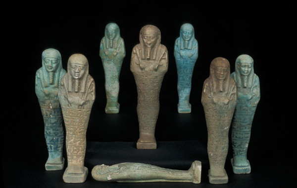
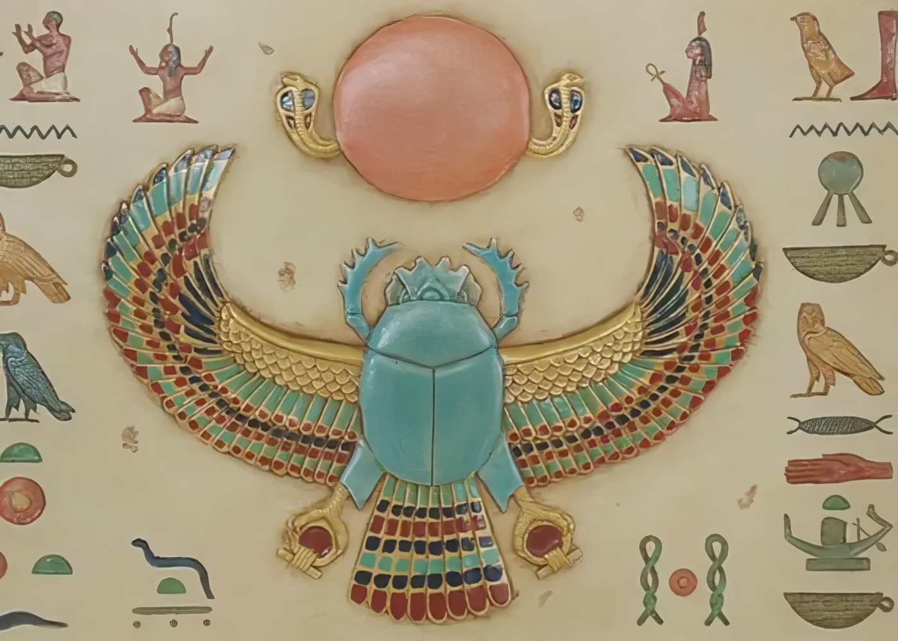
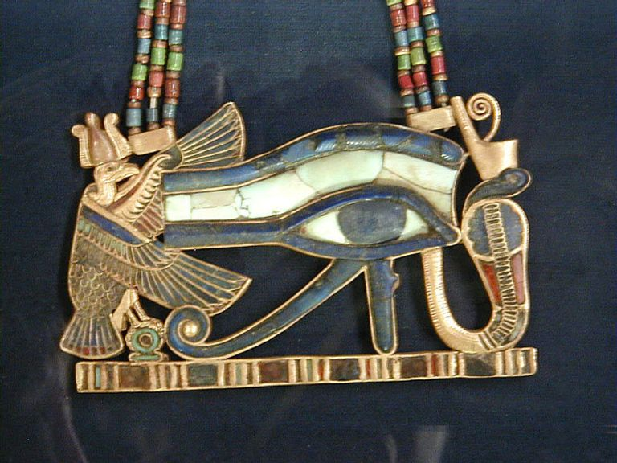
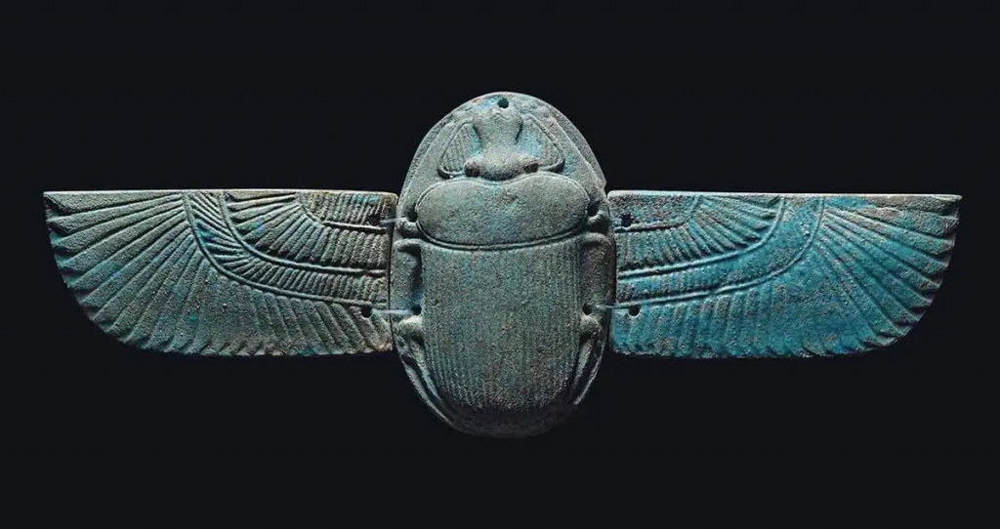

التماثيل الصغيرة
تماثيل صغيرة مثل تماثيل الملوك والآلهة كانت تُستخدم في المنازل والمعابد، تعكس الطقوس الدينية والرموز الملكية، وتُصنع من الخشب، الحجر، والفخار.

التمائم: الجعران
تمائم الجعران كانت رمزًا للقيامة والتجدد والحماية، تُحمل من قبل الملك والعامة، وتظهر براعة الفنان المصري في تمثيل الرموز الدقيقة.

الأقنعة: توت عنخ آمون
أقنعة مثل قناع توت عنخ آمون تُعد تحفًا فنية، تعكس ثراء التفاصيل الذهبية والزخارف الدقيقة، وتُستخدم في المقابر الملكية لإيصال الملك إلى العالم الآخر.

دور التمائم في الحياة اليومية
التمائم لم تكن للزينة فقط، بل كانت تمنح الحماية، الصحة، والقدرة على مواجهة الشرور، وكانت جزءًا من المعتقدات الدينية اليومية للمصريين القدماء.

أهمية التماثيل والتمائم
هذه القطع الصغيرة توثق فنون الحضارة المصرية القديمة، وتكشف عن مهارة الفنان المصري في الجمع بين الرمزية والدقة الجمالية، كما تساهم في فهم المعتقدات والثقافة المصرية القديمة.